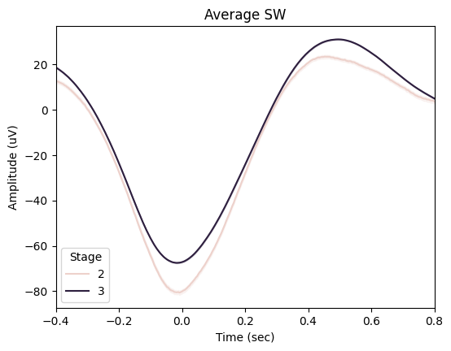
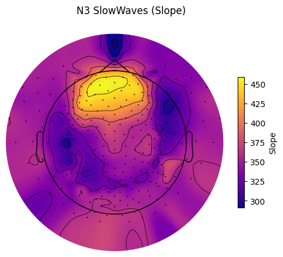
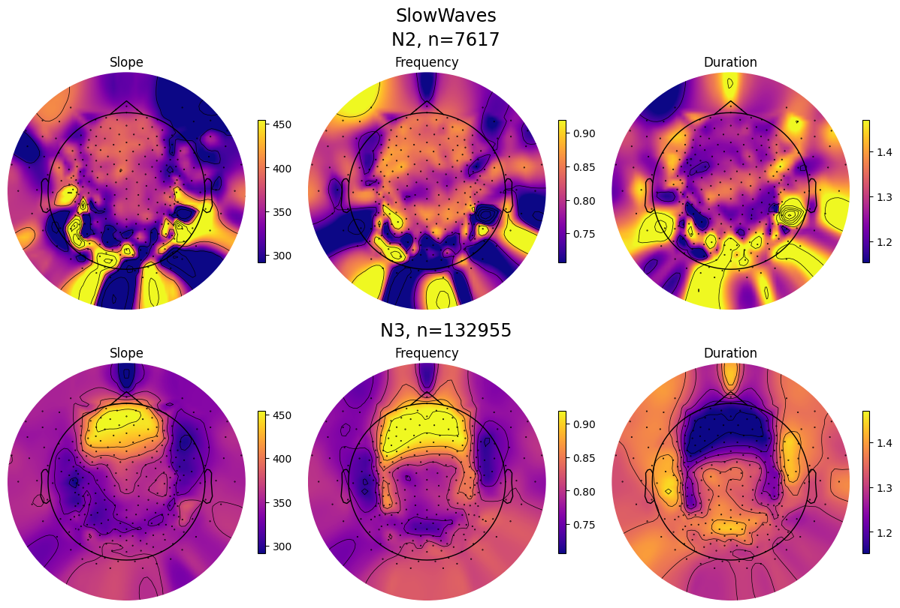

Slow waves analysis#
Intoductory notes:#
This notebook presents slow waves detection functionality.
Recommended reading:
Import module#
from sleepeegpy.pipeline import SlowWavesPipe
from joblib import parallel_backend; parallel_backend("loky", n_jobs=-1)
<joblib.parallel.parallel_backend at 0x19d20f22f50>
Spindles detection#
slow_waves_pipe = SlowWavesPipe(
path_to_eeg=r"C:\Users\Gennadiy\Documents\data\EL3001\after_ica_raw.fif",
output_dir=r"C:\Users\Gennadiy\Documents\data\EL3001",
path_to_hypno=r"C:\Users\Gennadiy\Documents\data\EL3001\staging.txt",
hypno_freq=1,
)
Opening raw data file C:\Users\Gennadiy\Documents\data\EL3001\after_ica_raw.fif...
Read a total of 1 projection items:
Average EEG reference (1 x 257) idle
Range : 0 ... 1994499 = 0.000 ... 7977.996 secs
Ready.
Opening raw data file C:\Users\Gennadiy\Documents\data\EL3001\after_ica_raw-1.fif...
Read a total of 1 projection items:
Average EEG reference (1 x 257) idle
Range : 1994500 ... 3988999 = 7978.000 ... 15955.996 secs
Ready.
Opening raw data file C:\Users\Gennadiy\Documents\data\EL3001\after_ica_raw-2.fif...
Read a total of 1 projection items:
Average EEG reference (1 x 257) idle
Range : 3989000 ... 5983499 = 15956.000 ... 23933.996 secs
Ready.
Opening raw data file C:\Users\Gennadiy\Documents\data\EL3001\after_ica_raw-3.fif...
Read a total of 1 projection items:
Average EEG reference (1 x 257) idle
Range : 5983500 ... 5985607 = 23934.000 ... 23942.428 secs
Ready.
Hypnogram is SHORTER than data by 0.43 seconds. Padding hypnogram with last value to match data.size.
Please refer to the YASA’s documentation for details about the arguments.
slow_waves_pipe.detect(
picks=["eeg"],
reference="average",
include=(2, 3),
freq_sw=(0.3, 1.5),
dur_neg=(0.3, 1.5),
dur_pos=(0.1, 1),
amp_neg=(40, 200),
amp_pos=(10, 150),
amp_ptp=(75, 350),
coupling=False,
coupling_params={"freq_sp": (12, 16), "p": 0.05, "time": 1},
remove_outliers=False,
verbose=False,
save=True,
)
Reading 0 ... 5985607 = 0.000 ... 23942.428 secs...
EEG channel type selected for re-referencing
Applying average reference.
Applying a custom ('EEG',) reference.
Removing existing average EEG reference projection.
[Parallel(n_jobs=-1)]: Using backend LokyBackend with 16 concurrent workers.
[Parallel(n_jobs=-1)]: Done 2 tasks | elapsed: 2.2s
[Parallel(n_jobs=-1)]: Done 56 tasks | elapsed: 8.5s
[Parallel(n_jobs=-1)]: Done 146 tasks | elapsed: 17.9s
[Parallel(n_jobs=-1)]: Done 257 out of 257 | elapsed: 28.8s finished
Please refer to the YASA’s documentation for details about the arguments.
slow_waves_pipe.results.summary(
grp_chan=False, grp_stage=True, mask=None, aggfunc="mean", sort=True
)
| Count | Density | Duration | ValNegPeak | ValPosPeak | PTP | Slope | Frequency | |
|---|---|---|---|---|---|---|---|---|
| Stage | ||||||||
| 2 | 7617 | 69.561644 | 1.278879 | -68.369328 | 39.043891 | 107.413219 | 364.222711 | 0.826626 |
| 3 | 132955 | 696.099476 | 1.259195 | -61.891508 | 46.102154 | 107.993663 | 379.508453 | 0.843116 |
slow_waves_pipe.plot_average(
save=True,
center="NegPeak",
hue="Stage",
time_before=0.4,
time_after=0.8,
filt=(None, None),
mask=None,
)

slow_waves_pipe.plot_topomap(
prop="Slope", # Any of the event properties returned by pipe.results.summary().
stage="N3", # Stage to plot the topomap for.
aggfunc="mean", # Aggregation function for channel grouping.
# Should contain at least index of the provided "stage".
sleep_stages={"Wake": 0, "N1": 1, "N2": 2, "N3": 3, "REM": 4},
axis=None, # Whether to plot on provided matplotlib axis.
save=True, # Whether to save the plot as a file.
topomap_args=dict(cmap="plasma"), # Arguments passed to mne.viz.plot_topomap().
cbar_args=None, # Arguments passed to plt.colorbar().
)

slow_waves_pipe.plot_topomap_collage(
# Some of the event properties returned by pipe.results.summary().
props=["Slope", "Frequency", "Duration"],
aggfunc="mean", # Aggregation function for channel grouping.
# Tuple of strs or "all", e.g., ("N1", "REM") or "all" (plots all "sleep_stages").
stages_to_plot="all",
# Should contain at least indices of the provided "stages_to_plot".
sleep_stages={"N2": 2, "N3": 3},
low_percentile=5, # Set min color value by percentile of the property data.
high_percentile=95, # Set max color value by percentile of the property data.
fig=None, # Instance of plt.Figure, a new fig will be created if None.
save=True, # Whether to save the plot as a file.
topomap_args=dict(cmap="plasma"), # Arguments passed to mne.viz.plot_topomap().
cbar_args=None, # Arguments passed to plt.colorbar().
)

Constructs MNE AverageTFR object for every available sleep stage.
slow_waves_pipe.compute_tfr(
freqs=(0.5, 5), # Interval of frequencies of interest.
n_freqs=100, # TFR frequency resolution.
time_before=4, # Time in sec before the peak to use in TFR computation. Should be positive.
time_after=4, # Time in sec after the peak to use in TFR computation.
method="morlet", # TFR method: 'morlet' or 'multitaper'.
save=True, # Whether to save AverageTFR object per sleep stage as hdf5 file.
overwrite=False, # Whether to overwrite existings files.
n_cycles=2,
)
slow_waves_pipe.tfrs
100%|██████████| 257/257 [01:09<00:00, 3.71it/s]
100%|██████████| 257/257 [14:22<00:00, 3.35s/it]
{'N2': <AverageTFR | time : [-4.000000, 4.000000], freq : [0.500000, 5.000000], nave : 29, channels : 257, ~392.7 MB>,
'N3': <AverageTFR | time : [-4.000000, 4.000000], freq : [0.500000, 5.000000], nave : 517, channels : 257, ~392.7 MB>}
slow_waves_pipe.tfrs["N2"].data
array([[[ 8327.17479164, 8409.2589031 , 8491.94287836, ...,
35404.27956195, 35156.87008082, 34909.20265543],
[ 7357.64827015, 7427.39297607, 7497.53071526, ...,
32679.58351747, 32432.94438208, 32185.96662475],
[ 6789.54824771, 6851.55713286, 6913.75284223, ...,
30179.76435424, 29936.52542406, 29692.83521332],
...,
[ 1834.03019877, 1935.24222045, 2029.3149276 , ...,
3261.51799011, 3115.19503396, 2958.17948907],
[ 1820.85763462, 1922.53721692, 2017.05615833, ...,
3222.94326212, 3078.62157465, 2923.30844848],
[ 1807.65889687, 1909.77336246, 2004.70576662, ...,
3185.54221483, 3043.18328126, 2889.52841916]],
[[ 24202.70709394, 24399.36885866, 24596.37251036, ...,
50321.90782328, 50012.82627733, 49704.93615338],
[ 21941.35811797, 22131.20507941, 22321.34274969, ...,
45206.75603714, 44972.73750474, 44737.82447029],
[ 20052.5683526 , 20235.04179837, 20417.70653509, ...,
42754.83530837, 42547.33256612, 42337.70483019],
...,
[ 3076.1995954 , 3245.84839231, 3403.73167424, ...,
10914.43734397, 10556.45743771, 10139.35496579],
[ 3046.19127634, 3215.58111149, 3373.08330497, ...,
10835.8834987 , 10479.03312913, 10062.17947254],
[ 3016.61125371, 3185.72982941, 3342.83910822, ...,
10759.12660556, 10403.32874813, 9986.65345322]],
[[ 48924.7366686 , 49281.10276281, 49637.32226658, ...,
40574.02163778, 40256.65218088, 39940.00958972],
[ 47042.29060578, 47419.70526406, 47797.03368464, ...,
38290.15641005, 37977.73657016, 37665.8410899 ],
[ 44957.32094384, 45349.79908158, 45742.22838007, ...,
36427.87788557, 36119.85345711, 35812.08736637],
...,
[ 5874.68940676, 6176.47893549, 6453.16389365, ...,
7802.31844175, 7482.01862967, 7129.22735957],
[ 5815.30501194, 6115.90548438, 6391.04252326, ...,
7735.75185703, 7416.73925872, 7064.74148881],
[ 5757.17504887, 6056.59924955, 6330.1970061 , ...,
7670.56978213, 7352.79980252, 7001.55515724]],
...,
[[212463.81305674, 214330.53920922, 216200.68345839, ...,
15592.67542713, 15466.71713248, 15341.09101363],
[191847.65471159, 193701.6256034 , 195558.98736755, ...,
14562.53905114, 14436.90294889, 14311.58542851],
[173764.242466 , 175610.29798594, 177460.02617483, ...,
13497.7072435 , 13375.70993021, 13253.95503643],
...,
[ 847.80554906, 934.57501376, 1024.47681551, ...,
2516.61441189, 2415.20464505, 2302.9901165 ],
[ 835.00602192, 921.06989357, 1010.21142621, ...,
2499.15805896, 2397.76049177, 2285.42633425],
[ 822.6687356 , 908.06872332, 996.49678034, ...,
2482.02728778, 2380.63265684, 2268.17086542]],
[[ 23333.86341839, 23559.75854409, 23786.63726005, ...,
74169.5718502 , 73468.38420988, 72771.47623374],
[ 21198.44161844, 21418.48629798, 21639.37317076, ...,
60959.03009258, 60388.08970484, 59820.14305386],
[ 19508.72849453, 19730.75509355, 19953.69479155, ...,
52158.94378936, 51682.57614576, 51207.90570914],
...,
[ 370.24572352, 396.52279059, 422.62877086, ...,
6581.65070227, 6320.38823547, 6028.12738544],
[ 364.40186778, 390.43376489, 416.29501029, ...,
6544.21505587, 6281.61371272, 5987.78032403],
[ 358.6772902 , 384.46216964, 410.07696502, ...,
6506.79421422, 6242.90653825, 5947.55462629]],
[[ 23821.18640175, 23974.79598268, 24127.88324169, ...,
23319.32984562, 23105.08667642, 22891.77737081],
[ 21935.96057398, 22090.60243185, 22244.65297618, ...,
21643.98303939, 21429.70183326, 21216.39936248],
[ 20301.56597672, 20457.44786929, 20612.68963218, ...,
20130.83182519, 19917.76686738, 19705.7175965 ],
...,
[ 3273.21459999, 3449.8006292 , 3612.98667568, ...,
2918.059931 , 2759.91549272, 2595.74680808],
[ 3257.11279328, 3434.96514868, 3599.29671109, ...,
2894.88854751, 2736.80666647, 2572.65028848],
[ 3240.98195676, 3420.07599166, 3585.53045437, ...,
2871.97332293, 2713.98137549, 2549.86092398]]])
slow_waves_pipe.tfrs["N2"].to_data_frame()
| time | freq | E1 | E10 | E100 | E101 | E102 | E103 | E104 | E105 | ... | E91 | E92 | E93 | E94 | E95 | E96 | E97 | E98 | E99 | VREF | |
|---|---|---|---|---|---|---|---|---|---|---|---|---|---|---|---|---|---|---|---|---|---|
| 0 | -4.000 | 0.5 | 8327.174792 | 24202.707094 | 48924.736669 | 39136.709413 | 16565.769149 | 21032.257004 | 16297.561439 | 14364.987680 | ... | 18311.186857 | 11788.543531 | 10151.399608 | 813004.188548 | 6635.561922 | 9187.194787 | 128842.213203 | 212463.813057 | 23333.863418 | 23821.186402 |
| 1 | -3.996 | 0.5 | 8409.258903 | 24399.368859 | 49281.102763 | 39406.336499 | 16708.449758 | 21202.065016 | 16443.286671 | 14494.296028 | ... | 18444.541127 | 11887.000917 | 10243.375095 | 826935.307053 | 6700.255489 | 9311.619642 | 130066.366501 | 214330.539209 | 23559.758544 | 23974.795983 |
| 2 | -3.992 | 0.5 | 8491.942878 | 24596.372510 | 49637.322267 | 39675.597990 | 16851.524047 | 21372.206949 | 16589.601708 | 14624.177349 | ... | 18577.913438 | 11985.771994 | 10335.765080 | 841068.344747 | 6765.308494 | 9437.310772 | 131292.465082 | 216200.683458 | 23786.637260 | 24127.883242 |
| 3 | -3.988 | 0.5 | 8575.230882 | 24793.703990 | 49993.360119 | 39944.465872 | 16994.982900 | 21542.672288 | 16736.502345 | 14754.629653 | ... | 18711.293518 | 12084.854022 | 10428.569612 | 855405.572419 | 6830.719970 | 9564.273811 | 132520.345609 | 218074.077555 | 24014.490320 | 24280.428790 |
| 4 | -3.984 | 0.5 | 8659.127428 | 24991.348688 | 50349.181273 | 40212.912122 | 17138.817163 | 21713.450432 | 16883.984341 | 14885.651000 | ... | 18844.671407 | 12184.245884 | 10521.787122 | 869949.275252 | 6896.489029 | 9692.514330 | 133749.841216 | 219950.553685 | 24243.307984 | 24432.413277 |
| ... | ... | ... | ... | ... | ... | ... | ... | ... | ... | ... | ... | ... | ... | ... | ... | ... | ... | ... | ... | ... | ... |
| 200095 | 3.984 | 5.0 | 3429.901500 | 11262.392110 | 8186.597511 | 9503.453968 | 8531.528837 | 6867.098126 | 4830.527870 | 2719.352112 | ... | 7957.036605 | 4867.406478 | 1872.140713 | 6163.467729 | 8182.874264 | 42196.721683 | 2753.857842 | 2645.100466 | 6920.765242 | 3162.336643 |
| 200096 | 3.988 | 5.0 | 3314.909209 | 11047.257251 | 7949.896955 | 9172.306963 | 8194.028659 | 6609.685367 | 4635.594985 | 2607.184777 | ... | 7734.217197 | 4668.399175 | 1808.386104 | 6018.772218 | 7918.656800 | 41436.814301 | 2675.732279 | 2570.668662 | 6734.209980 | 3021.996150 |
| 200097 | 3.992 | 5.0 | 3185.542215 | 10759.126606 | 7670.569782 | 8801.089724 | 7824.249030 | 6324.156979 | 4425.367535 | 2485.573841 | ... | 7469.392018 | 4450.939737 | 1736.459351 | 5839.955716 | 7613.461919 | 40400.796093 | 2582.723509 | 2482.027288 | 6506.794214 | 2871.973323 |
| 200098 | 3.996 | 5.0 | 3043.183281 | 10403.328748 | 7352.799803 | 8394.451726 | 7426.868327 | 6014.294154 | 4201.815750 | 2355.866277 | ... | 7166.566486 | 4217.945319 | 1657.303549 | 5629.285089 | 7272.190910 | 39108.043828 | 2476.376797 | 2380.632657 | 6242.906538 | 2713.981375 |
| 200099 | 4.000 | 5.0 | 2889.528419 | 9986.653453 | 7001.555157 | 7957.730378 | 7007.049233 | 5684.317901 | 3967.230976 | 2219.598580 | ... | 6830.508999 | 3972.575648 | 1571.995078 | 5389.834376 | 6900.349854 | 37583.368617 | 2358.483433 | 2268.170865 | 5947.554626 | 2549.860924 |
200100 rows × 259 columns
slow_waves_pipe.tfrs["N2"].plot(["E101"]),
slow_waves_pipe.tfrs["N3"].plot(["E101"])
No baseline correction applied
No baseline correction applied
[<Figure size 640x480 with 2 Axes>]
If you want to load saved TFR files:
slow_waves_pipe.read_tfrs(dirpath=None)
Reading C:\Users\Gennadiy\Documents\data\EL3001\SlowWavesPipe\slowwaves_N2-tfr.h5 ...
Reading C:\Users\Gennadiy\Documents\data\EL3001\SlowWavesPipe\slowwaves_N3-tfr.h5 ...